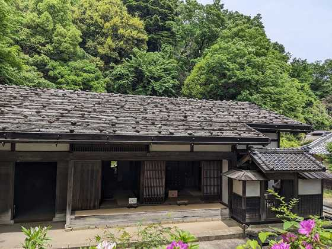
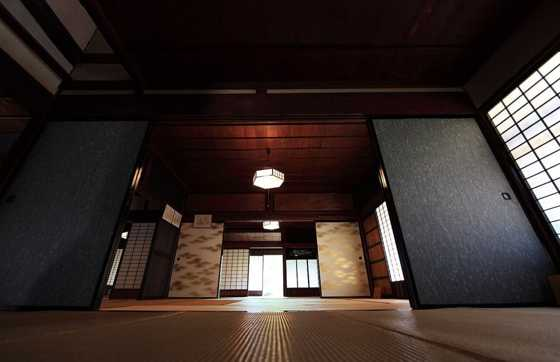
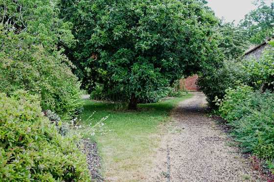

KOMINKA CAFE · SHIRAHAMA
築108年の家に、人が集まる。パンから手作りの「お母さんの味」を、ゆっくりどうぞ。
和歌山県白浜町富田にある、4テーブル席の小さなカフェです。建物は築108年の古民家で、オーナーのご主人の生家。その家が空いたことをきっかけに開業されたそうです。
オーナーの橋本培子さんは、60歳まで事務職をされ、パン作りは家庭での趣味でした。「人が集まる場所を作ってみたい」という以前からの思いと、生家が空くという巡り合わせが重なり、お店が生まれました。ご家族から「お母さんの味」と言われるサンドイッチが、そのままお店の看板になっています。


店名「pono.」の意味は確認できていません。ここでは断定せず、載せていません。1階席は希望に応じた貸切、キッズスペース、2階でのリラクゼーションday(月3日)もあるとのことです。
古い梁のある部屋で、パンの香りに包まれてほっとしました。サンドイッチは手作りの優しい味です。
席数が少なく、ゆったり過ごせます。テイクアウトで友人にも買って帰りたくなりました。
子どもを連れて行きましたが、おもちゃのあるスペースがあって安心でした。
上記は制作側が作成したイメージ例で、実在のお客様の声ではありません。
ライセンスの詳細は creativecommons.org をご覧ください。